Tutorial Arep-Patrones Arquitecturales
Este es un Tutorial para construir un sitio web dinámico
sobre Amazon Web Services: EC2,S3 y RDS. Para esto,
Se desplegará un sitio estático usando S3,
Se desplegará un formulario dinámico usando EC2, y
Se Enlazará el formulario a una base de datos relacional,
para almacenar y traer los datos almacenados.
El código de la implementación esta disponible Aqui:
Repositorio
Base de datos
1. Crear una instancia en RDS.
2. Configurar la creacion de la base de datos.
- Método de creación -> Standard Create
- Engine Options -> MySql
- Templates -> Free tier
- Settings -> nombre de la instancia
- Credential Settings -> master username / master password
- Additional connectivity configuration -> publicly accesible / crear nueva vpc
- Additional Configuration -> nombre de la base de datos
3. Cambiar las reglas de entrada de la vpc para que se pueda
acceder a la base de datos
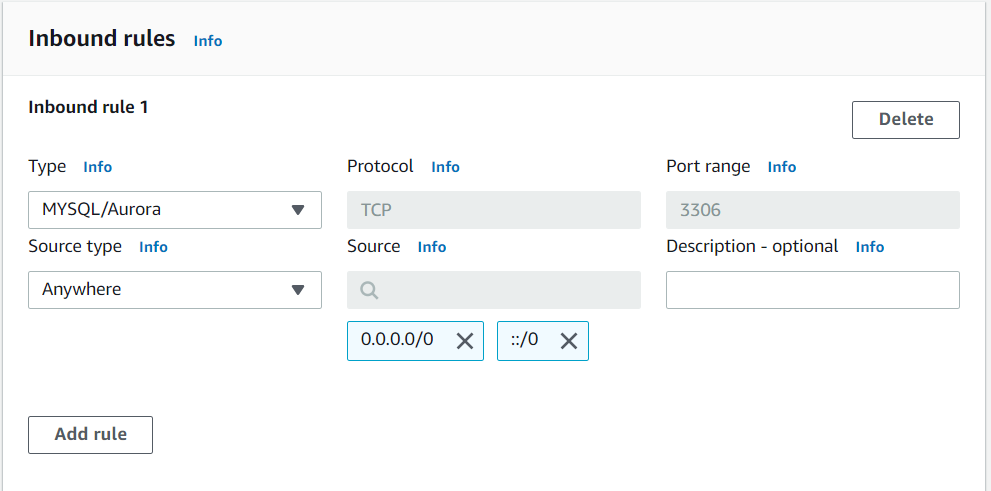
4. Probar la conexión con una herramienta de base de datos
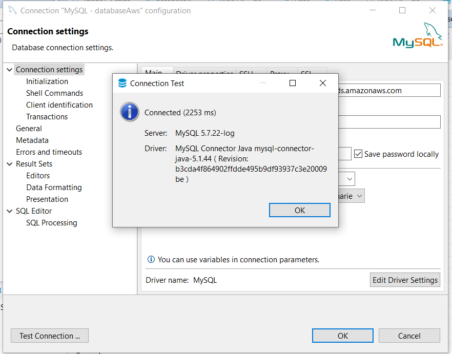
5. Crear las tablas e insertar datos
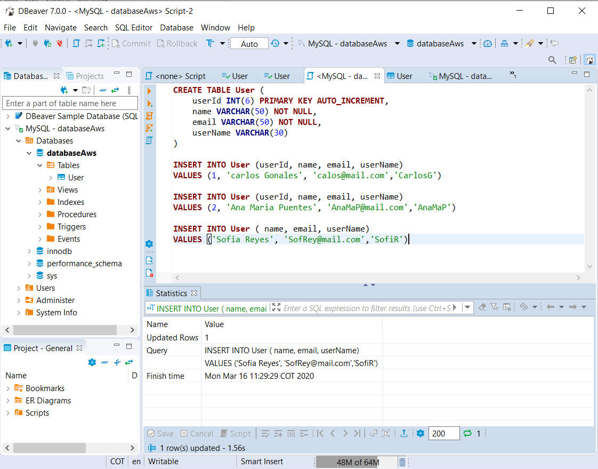
6. Connectarse a la base de datos desde la aplicación
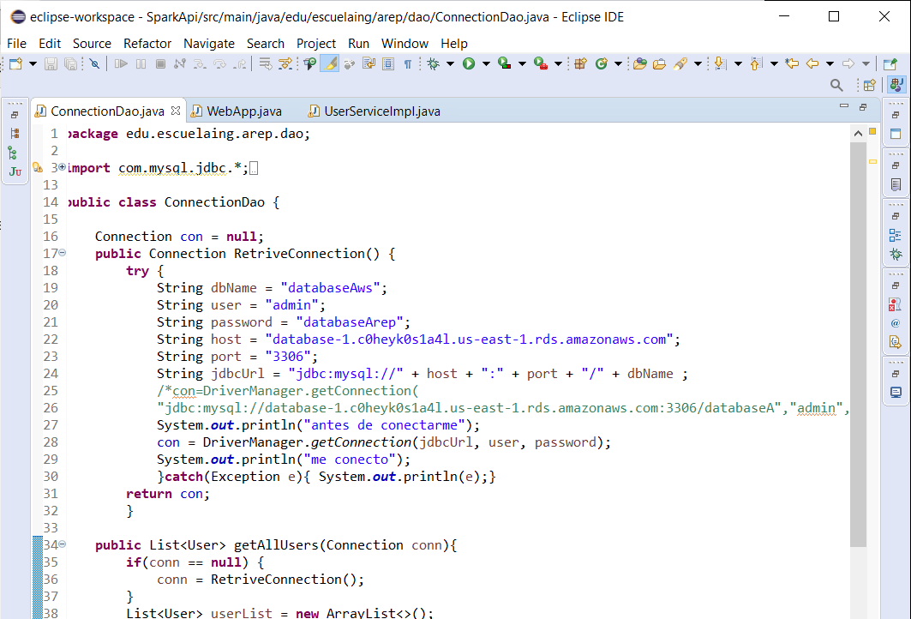
EC2
1. Crear una instancia de EC2
- Crear o seleccionar un par de llaves y descargarlas.
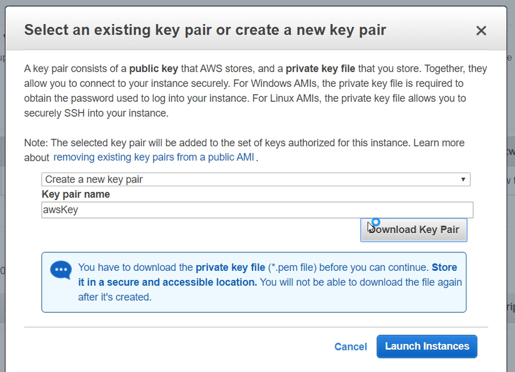
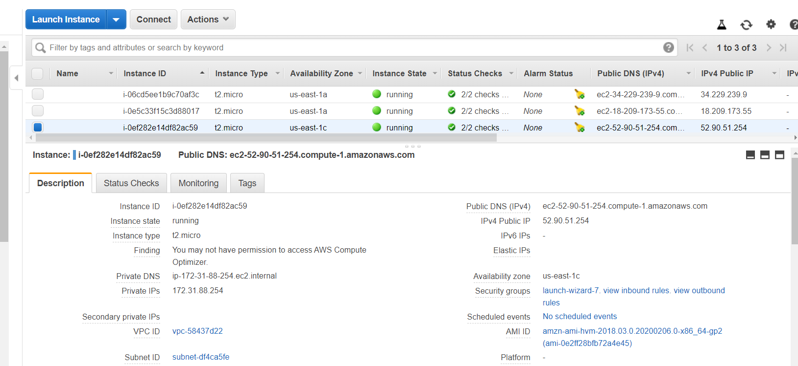
2. Cambiar las reglas de entrada de la vpc para poder
acceder desde la EC2 a la base de datos, http y el puerto
de la aplicación.
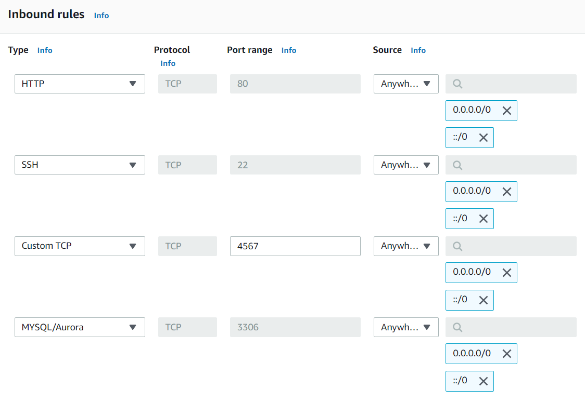
3. Conectarse a la instancia con ssh
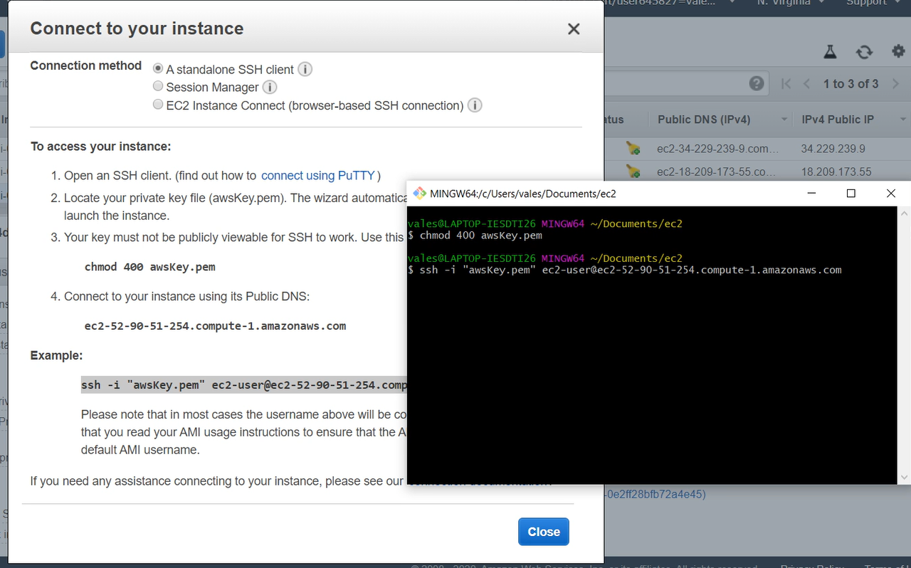
- Instalar java 8 con los comandos
sudo yum install java-1.8.0
sudo yum install java-1.8.0-openjdk-devel
sudo yum remove java-1.7.0-openjdk
- Instala maven con los comandos
sudo wget http://repos.fedorapeople.org/repos/dchen/apache-maven/epel-apache-maven.repo -O /etc/yum.repos.d/epel-apache-maven.repo
sudo sed -i s/\$releasever/6/g /etc/yum.repos.d/epel-apache-maven.repo
sudo yum install -y apache-maven
mvn --version
- Cambiar maven con java 8
sudo update-alternatives --config java
sudo update-alternatives --config javac
- Instalar Git
sudo update-alternatives --config java
sudo update-alternatives --config javac
4. Clonar el repositorio de gitHub
S3
1. Crear un bucket
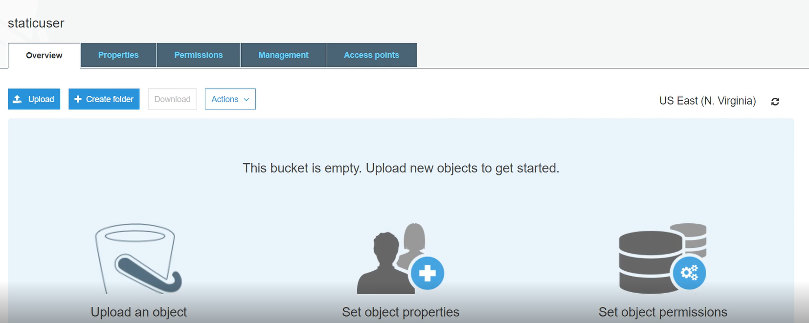
- permitir acceso público
2. Configurar los archivos para que soliciten las peticiones
a la EC2
- En js cambiar a la url pública de la EC2.
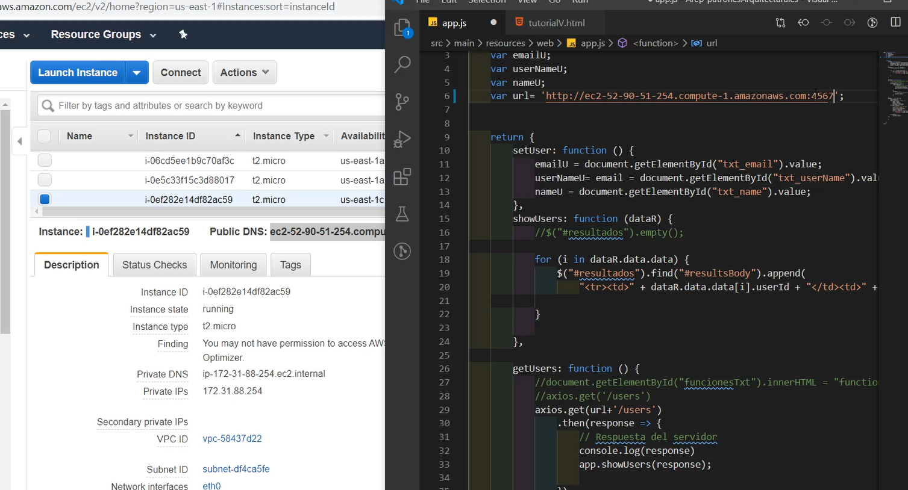
3.Subir los archivos al bucket
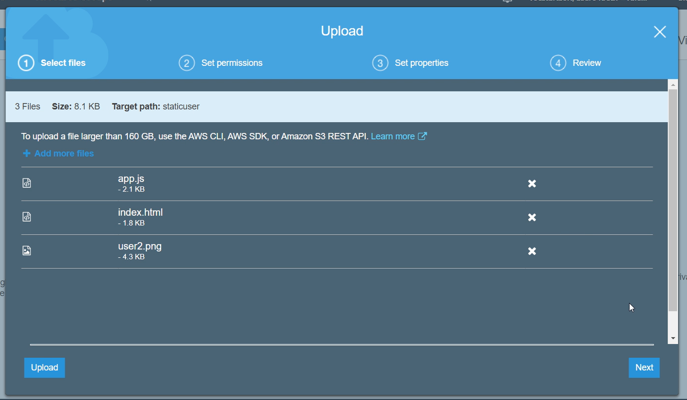
4.Configurar los cors para permitir acceder a la s3
<CORSConfiguration>
<CORSRule>
<AllowedOrigin>*</AllowedOrigin>
<AllowedMethod>GET</AllowedMethod>
<AllowedMethod>PUT</AllowedMethod>
<AllowedMethod>POST</AllowedMethod>
<AllowedMethod>DELETE</AllowedMethod>
<AllowedHeader>*</AllowedHeader>
</CORSRule>
</CORSConfiguration>
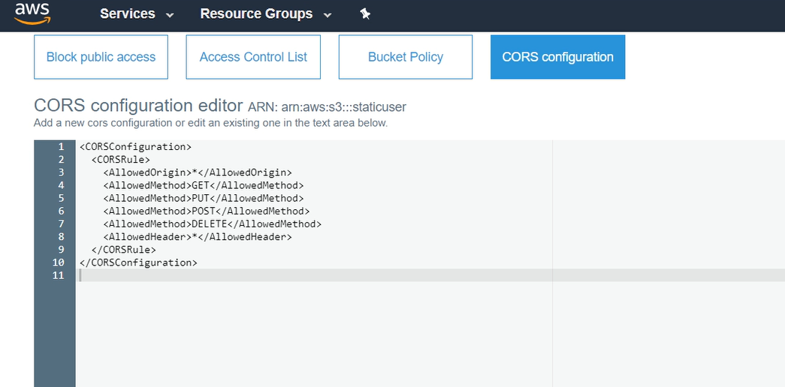
5.En properties/static website hosting
referenciar el documento index.html
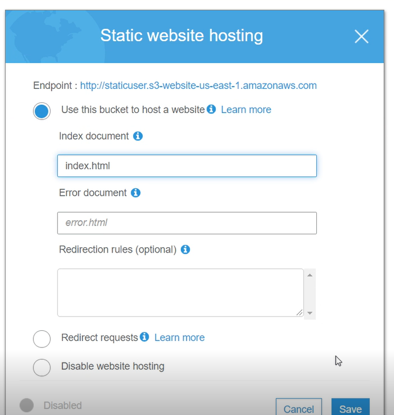
6. Correr el programa en ec2
7. Verificar su funcionalidad.
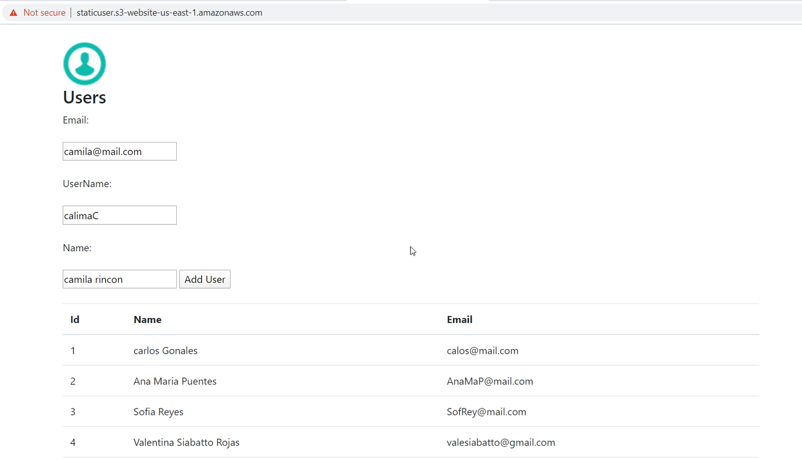